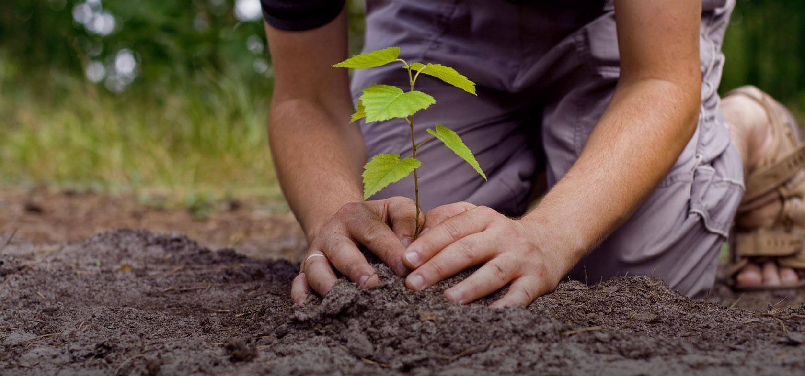

<ion-header>
  <ion-toolbar>
    <ion-title>Plantas</ion-title>
  </ion-toolbar>
</ion-header>

<ion-content>

  <ion-card href="registros/">
    
    <ion-card-header>
      <ion-card-title>Registros</ion-card-title>
    </ion-card-header>
  
    <ion-card-content>
      Visualiza las plantas registradas
    </ion-card-content>
  </ion-card>

  <ion-card href="seguimiento/">
    
    <ion-card-header>
      <ion-card-title>Seguimiento</ion-card-title>
    </ion-card-header>
  
    <ion-card-content>
      Visualiza los seguimientos registrados sobre las plantas
    </ion-card-content>
  </ion-card>
</ion-content>
